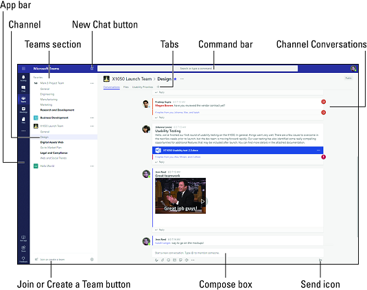

Interactivity/UX

The app does not necessarily maintain visual hierarchy, as the experience itself is not so much chronological or ordered as it is based on the needs and tasks of the user.
Across the app, fonts, colors, and layouts remain consistent. A navigation bar lives on the left side of the interface for constant navigation availability, the colors remain to be purple. black and white, and the font doesn't change.
Interestingly, because this app is mainly used for communication, the visual elements are not exactly stimulating. If anything, they are clean and minimal so as to not confuse users and create a clean and organized look for the app.
The app works well on desktop, but is slightly limited on mobile due to the loss of screen space.
Recommendations
Although a navigation bar is present, perhaps a home page would be useful for users. There is no chronologically implied use of the app, but a homepage may help users to navigate the app in a way that is organized and clear.
Visually, the existing interface is fine. It communicates its content clearly and presents it pleasantly.
Interestingly enough, many user complaints about Microsoft Teams lies in the functions of the features. Sometimes the notifications can get glitchy, or some other feature function.